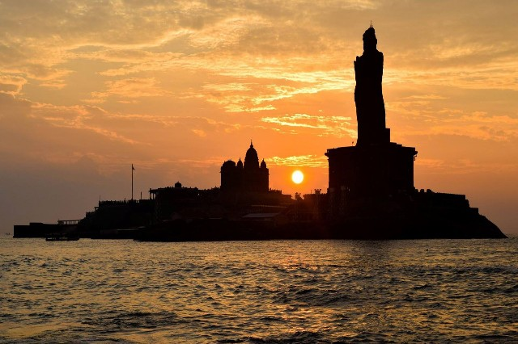
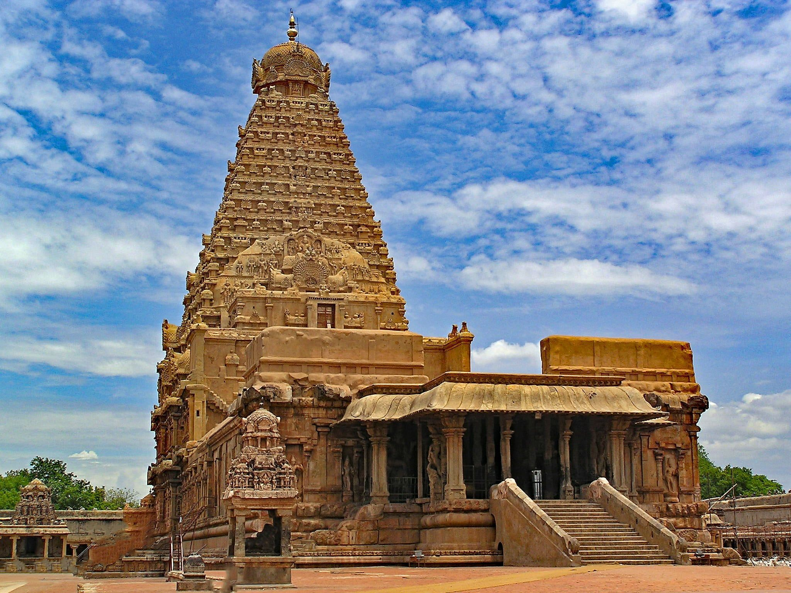

Oldest Language in the world : தமிழ் (Tamil)
Microsoft is pushing the concept of cloud gaming hard and its latest efforts include the company testing streaming via web browsers.
The History of Tamil Nadu
dates back to 6000 years. It can be broadly divided into Ancient, Medieval and Modern Tamil
Nadu. Many of the historians believe in the theory of the Aryan invasion in the South. The Tamils belonging to the
Dravidian race had to move further South due to the invasion by the Aryans.
The history of the area dates back to more than two thousand years ago. Tamil Nadu was originally known as Tamilham and
the proof of the Tamilham settlements are clear with the existence of ancient ports like Karipattinam, Arikamedu and
Korkai. The birth place of Dravidian culture has witnessed several great dynasties. The Pallavas ruled in the 4th
century A.D. The Cholas ruled between 1st and 4th centuries. They rose to power again in the 9th century, only to be
replaced by the Pandyas in the 14th century. The East India Company started their factory in 1640 at Madras. They fought
with the Dutch and the French to establish their supremacy. Tamil Nadu has contributed a lot in the country's struggle
for freedom. After India's Independence, the state of Madras came into existence and 1968, the name was changed to Tamil
Nadu..
The History of Tamil Nadu consists of the rise of the different kingdoms under the then rulers. History of Tamil Nadu is
a witness to the rise and fall of the several dynasties under their able and incompetent rulers. The Chola dynasty rose
in power in Tamil Nadu between the 1st and 4th centuries. Karikalan was the first and one of the famous ruler of the
Cholas. Later in the 9th century, the Cholas regained power under Vijayalaya Chola..
Rajaraja Chola was the greatest ruler among the later Chola rulers. It is during his reign that the architecture reached
the pinnacle. Rajendra Chola I was the successor and the son of the ablest ruler Rajaraja Chola. He further expanded the
kingdom of the Cholas and consolidated the empire as well. He even established a new capital called
Gangaikondancholapuram to commemorate a political victory..
The Pandyas that came to prominence after overthrowing a decaying Chola empire. The Cholas were mainly known for their
administrative capabilities, for the different constructions in the kingdom and for their aesthetic senses.
Ancient
 Tamil Nadu, is one of the largest state of India. It is also one of the southern most state. The History of Ancient Tamil Nadu can be traced back to about 6000 years back. The Dravidian Civilization encapsulates the state of Tamil Nadu as well some of its neighboring states of Kerala, Karnataka and Andhra Pradesh.The history of Ancient Tamil Nadu can be placed somewhere between 1st to 9th centuries. The civilization of Tamil Nadu is considered to be one of the oldest civilization of the world. There is much debate regarding the origin of the Tamils. One can not rule out the theory of the invasion of the Aryans. It is generally believed that it is due to the Aryans that the Dravidians had to stay back in the far south.
During the 1st to the 4th century, the early Cholas ruled the lands of Tamil Nadu. The first and the most important king of this dynasty was Karikalan. This dynasty was mainly known for their military prowess. The dam named Kallanai over the river Cauvery was constructed with the initiative of the king Karikalan.
The Chola Dynasty occupies a major part in the History of Ancient Tamil Nadu. The kings of the dynasty were also known for constructing the different temples. The Brahadeswarer's Temple is such a magnificent example of Chola architecture.
The Pallava Dynasty ruled Tamil Nadu for near about 400 years starting from the later half of the 4th century. Mahendravarman I and his son Narasimhavarman were the greatest rulers among the Pallavas. Thus the Ancient Tamil Nadu has the marks of glorious history.
Medieval
The history of Tamil Nadu is very rich and boasts of the prowess of the rulers of the different dynasties. The Medieval Tamil Nadu spans the 9th to 14th centuries. The Dravidian Civilization of Tamil Nadu is considered to be one of the oldest civilization of the world.The history of Medieval Tamil Nadu starts with the Cholas regaining their power in the 9th century. It is mainly under Rajaraja Chola and his son Rajendra Chola that the re-establishment of lost power was possible. The Chola rulers defeated the other rising powers like Cheras, Pandyas and the Mahipalas. To celebrate the victory over the Mahipalas of Bihar and Bengal, a new capital called Gangaikonda Cholapuram was established by Rajendra Chola. The Chola empire spread far and wide with the winning battles.
In the 14th century, the power of the Cholas declined gradually. The power was over taken by the Pandyas. But soon they were over powered by the Muslim invaders. This invasion of 1316 completely destroyed the power of the Cholas and Pandyas of South India.
As a reaction to the Muslim invasion, the Hindus took the initiative of building Vijaynagara empire. The empire also assembled the remaining Chola rulers as well to confront the Muslims. The capital of Vijaynagara empire was Hampi. It occupies an important and prosperous place in the Medieval Tamil Nadu. This Hindu empire couldnot survive for long as it has to surrender in the hands of the Sultans of the Deccan in the Battle of Talikota. The fragmented Vijaynagara empire was later ruled by the Nayaks.
The History of Medieval Tamil Nadu prospered under the Nayakas of the South. Their rule proved to be a very peaceful one, compared to the prior periods of turmoil in the Medieval Tamil Nadu.
Modern Tamilnadu
The history of Tamil Nadu is enriched by the prowess and deeds of the rulers of different dynasties in the earlier periods. The Modern Tamil Nadu has an equally glorious history to share with the rest of the world. The southern most state of India, Tamil Nadu's Dravidian culture is one of the oldest of the world.The rise of the British regime in Tamil Nadu marks the advent of the Modern Tamil Nadu. They established their settlement in the southern India. The British settlers grew strong under the East India Company. They took the advantage of the conflicts and quarrels among the existing rulers in South India.
During the same time, other European powers tried to establish their power in South India as well. The Dutch settlement was formed in India along with the French colonies. But the British power emerged more powerful, as they defeated the French army and completely drove out the Dutch power from South India. Gradually the British power consolidated their firm hold in the Southern Indian states including Tamil Nadu.
Modern Tamil Nadu is also marked by the nationalistic movement. The anti-colonial feeling against the British started of these movements in the 18th century. In this state the movement was carried under the chieftains of Shivgana and Tirunelveli.
After India gained independence in 1947, the state of Madras was renamed as Tamil Nadu in the year 1968. The History of Modern Tamil Nadu is fascinating and records the bravery of the sepoys fighting against the British hegemony.